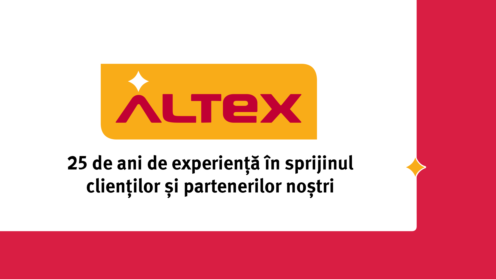

Hello,Sign In";
else{
echo "Bun venit, "; echo $_SESSION['printname'];
if ($_SESSION['email']=='root')
{
echo"
Administrare Conturi";
}
echo"
Logout";
}
?>
Altex - brand romanesc de peste 25 de ani
Altex Romania reprezinta poate cel mai bun exemplu de antreprenoriat de succes din tara noastra. In peste 25 de ani de provocari si adaptari la schimbarile mediului de afaceri, Altex a trecut de la un business local de import de televizoare la liderul pietei romanesti de retail. Cum? Avand mereu o relatie buna cu clientul si adaptand infrastructura, astfel incat sa corespunda exigentelor retailului romanesc. Inca de la infiintare, compania Altex si-a propus sa ofere produse de calitate adecvate nevoilor consumatorilor si solutii de finantare acesibile.
Tehnologie disponibila tuturor clientilor
Altex are misiunea de a face tehnologia disponibila tuturor clientilor la nivel national, facilitand astfel disponibilitatea serviciilor si produselor care le vor satisface cel mai bine nevoile. Conceptul omnichannel aduce confortul si usurinta in procesul de informare, luare a deciziei, interactiune cu produsul, cumparare si apoi utilizare.
Ca reprezentanti ai companiei, ne mandrim ca suntem una dintre cele mai importante companii private romanesti si liderul pietei de produse electronice, electrocasnice, IT&C si multimedia din Romania, cu o cifra de afaceri de circa 720 de milioane de euro si un profit net de peste 10 milioane de euro in 2018.
Reteaua noastra nationala de magazine (peste 100 de magazine Altex) se afla in continua expansiune, la fel si gamele de produse pe care le comercializam, la cele mai avantajoase preturi.
Suntem incantati ca putem oferi clientilor nostri o gama variata de electrocasnice mici, electrocasnice mari, produse cosmetice, parfumuri, obiecte de voiaj, trolere, produse pentru bebelusi, articole pentru copii, biciclete electrice, masini second hand, laptopuri, televizoare, telefoane, produse software, aspiratoare, fiare de calcat, aparate de aer conditionat, jocuri pentru PC si diverse console (cum ar fi PS sau Xbox), calculatoare pentru gaming si multe alte produse.
Gama de produse este atent aleasa, avand ca principal criteriu calitatea si performanta produsului.
Solutii de finantare
Pentru clientii nostri, am infiintat Credex, o companie de credite de consum, care sa va ajute cu solutii optime de finantare pentru cumpararea articolelor aflate la reduceri pe website-ul nostru si in reteaua nationala de magazine. Solutiile de finantare pe care le-am gandit sunt extrem de flexibile si se remarca prin dobanzile si ratele scazute.
Cei peste 4.000 de angajati din magazine, de la sediul central din Voluntari si in depozitele de marfa incearca in fiecare zi sa ofere cele mai bune experiente de interactiune cu brandul nostru.
Doar asa putem oferi „cel mai mic pret din Romania” si promite “de 2 x diferenta, daca gasesti in alta parte mai ieftin”.
Cu ajutorul colegilor din magazine si al produselor expuse completam oferta de pret cu o experienta reala, convingatoare, care sa dea clientului increderea ca a facut cea mai buna investitie.
Indrazneste si vino alaturi de cei mai buni! - Vino in echipa Altex!